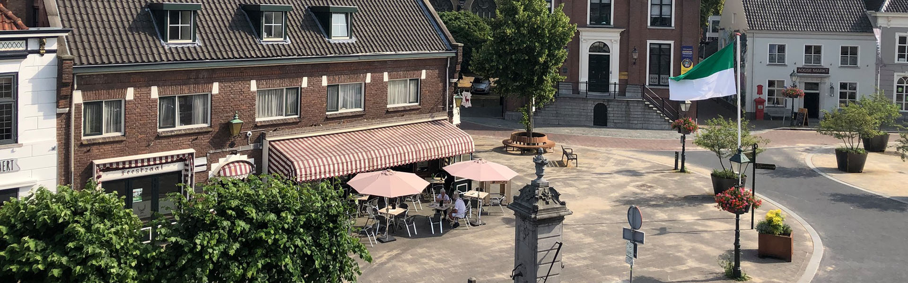
Haagsemarkt 34, Breda
Herberg
Het Roode Hert
De oudste herberg en café van Breda. Zeven dagen per week open voor koffie, lunch, een borrel of een feestje.
Ma t/m do en zo 10.00 - 24.00, vr en za 10.00 - 01.00
De oudste herberg en café van Breda
En de op één na oudste van Noord-Brabant.
Op 27 januari 1518 verkocht Pastoor Peter de Bruyn het door hem zeven jaar daarvoor gebouwde Huis 'den Hert', gelegen aan de Haagsemarkt, aan Gieles Anthonis Bays. Die begon er onder dezelfde naam zijn herberg.
Nu, 500 jaar later, is Herberg Het Roode Hert nog steeds een horecabedrijf, met grote en kleine feestzalen, waar iedereen welkom is.
7 dagen per week openUitgebreide lunchkaartGratis parkeren
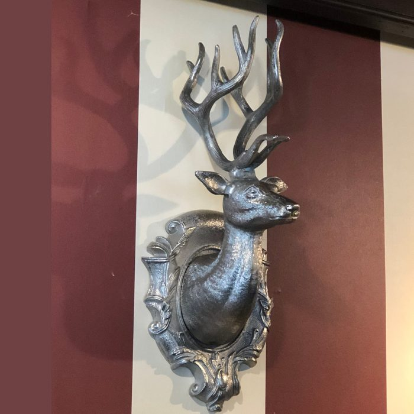
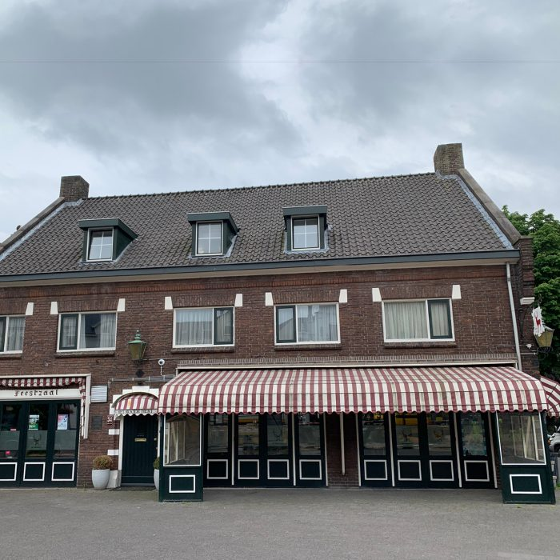
Lunchkaart
Lunchen kan zeven dagen per week, vanaf 11.00 uur.
Soep
Inclusief brood
Lunchgerechten
Keuze uit wit-, bruin- of maïsbrood
Keuze uit witte of bruine harde bol of zacht wit puntje
Keuze uit wit- of bruinbrood
Inclusief brood
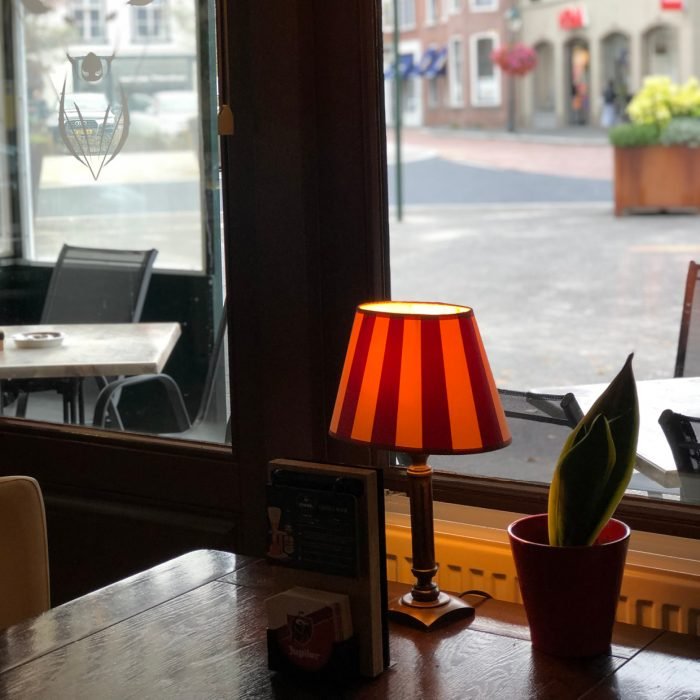
Voor bij de borrel
Te bestellen tot een kwartier voor sluitingstijd.
Borrelkaart
Snackkaart
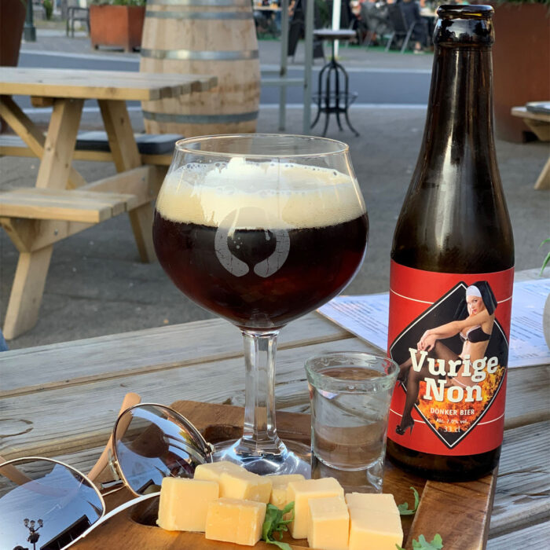
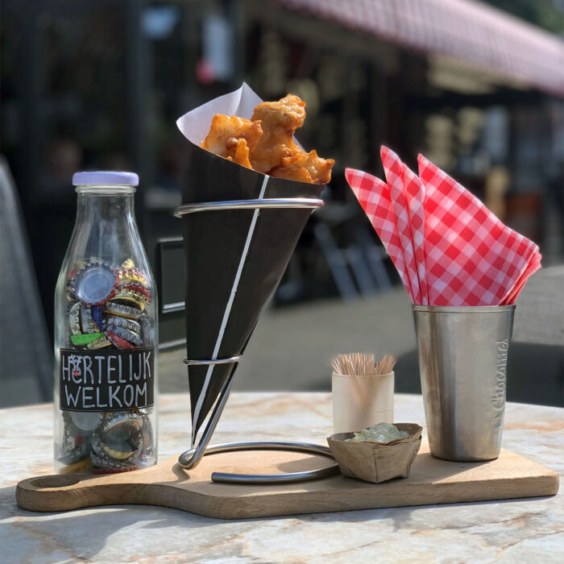
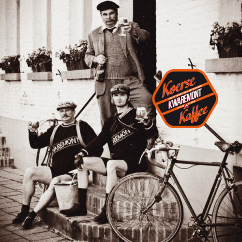
Kwaremont Koerskaffee
Het is officieel: Herberg Het Roode Hert is een Kwaremont Koers Kaffee. Een echt wielercafé.
Voor alle fietsliefhebbers de uitgelezen plek om te starten, voor een tussenstop, en natuurlijk om je fietstocht te eindigen met een goed glas Kwaremont.
- Een fietspomp staat voor je klaar, zodat je weer met volle banden vertrekt.
- Je kunt je bidon bij ons laten vullen met vers water.
- Kleine reparatiesetjes voor een lekke band of een klein mankement.
- Vers gebakken cake voor de benodigde energie.
- Elke koers op groot scherm, met quizzen en pronostieken.
Fietsen vanaf de herberg
Mountainbike
Door de bossen in de omgeving, zoals de Vrachelse Heide, het Mastbos en het Liesbos.
Racefiets
Er vertrekken bijna dagelijks groepen vanaf de herberg.
Recreatief
Over mooie fietspaden, bijvoorbeeld langs de Van Gogh-routes.
Feestzalen, groot en klein
Wil je een feestje geven bij Herberg Het Roode Hert? Of wil je gewoon meer informatie? Stuur dan even een mailtje, dan denken we graag met je mee.
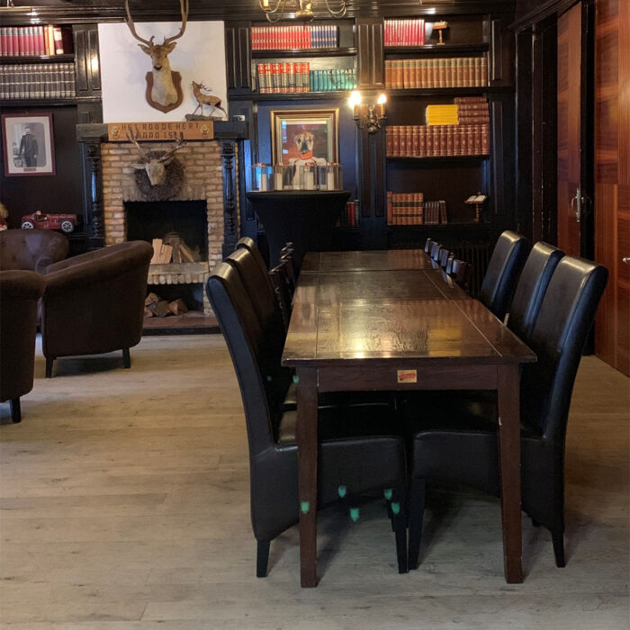
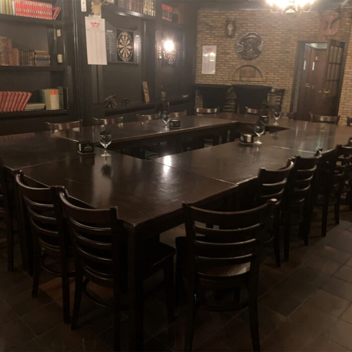
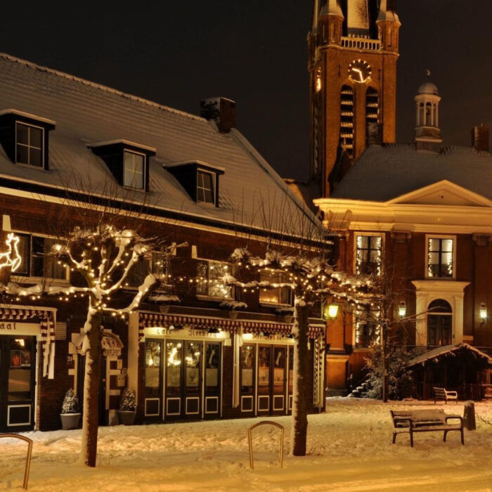
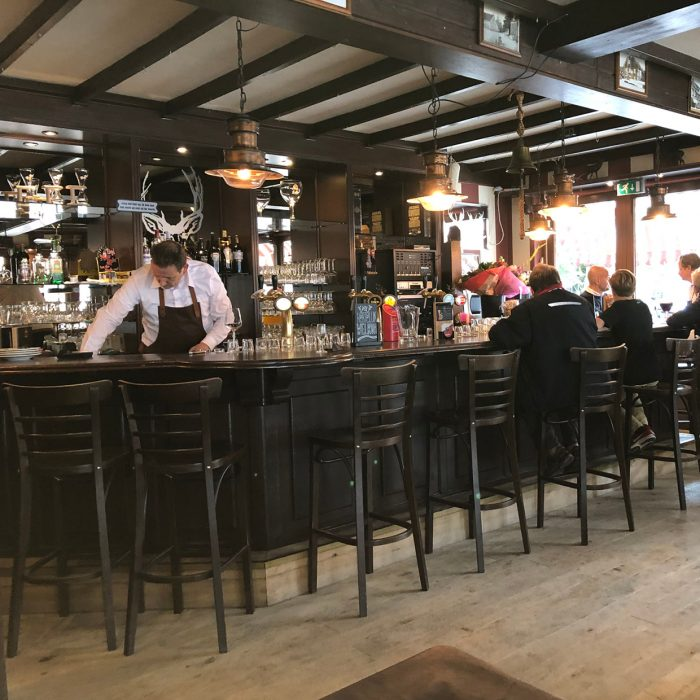
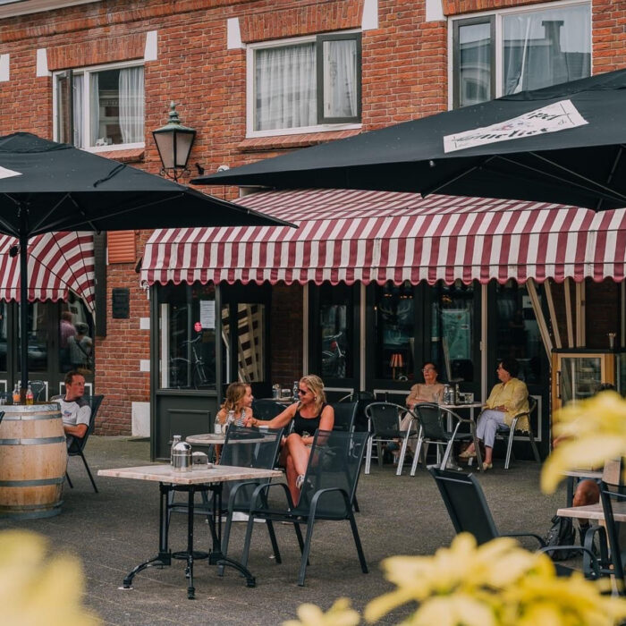
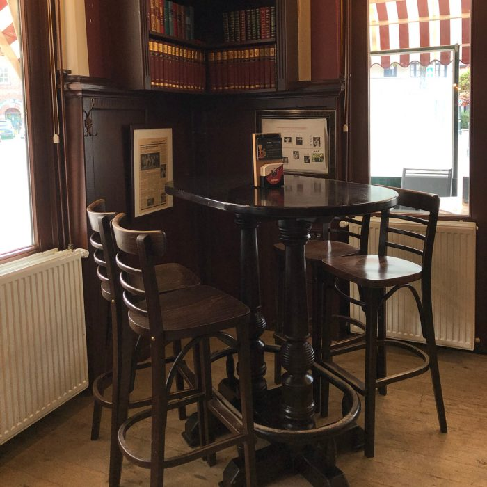
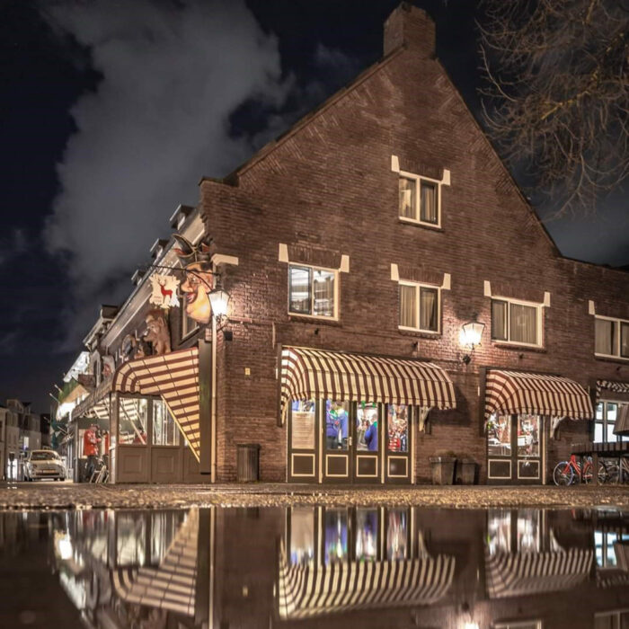
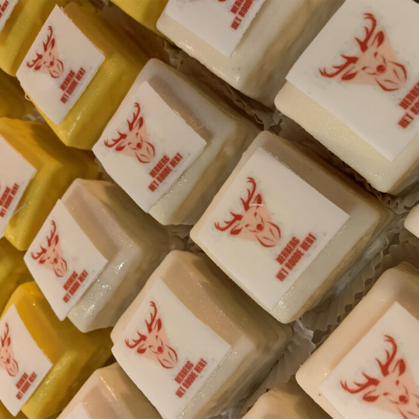
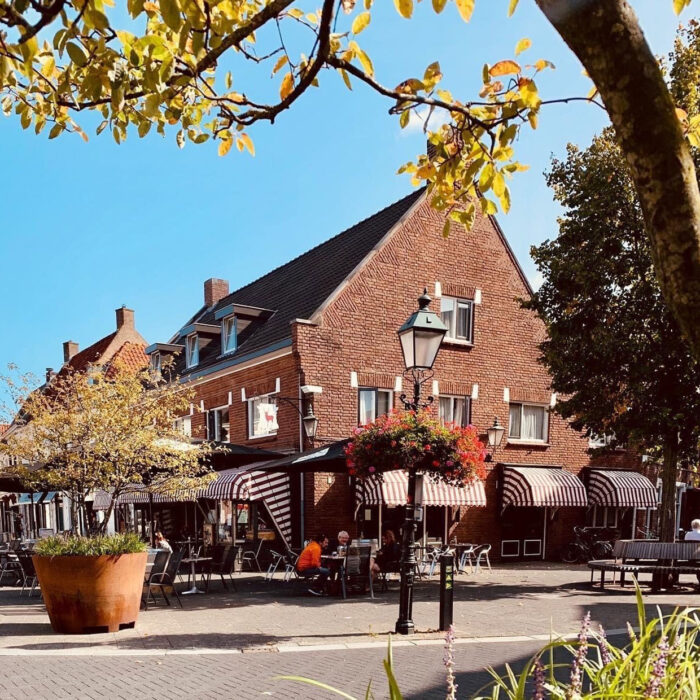
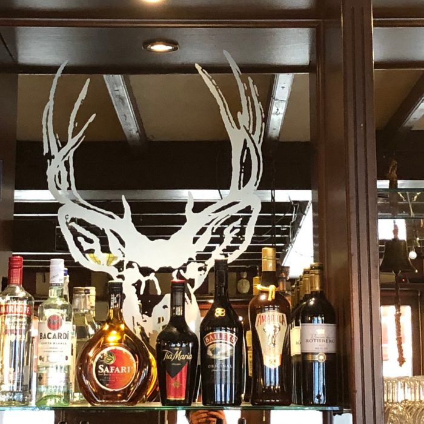
Reserveren
Bel of mail ons en we zetten een tafel voor je klaar.
- Online reserveren kan alleen voor binnen.
- Met meer dan 8 personen? Reserveer telefonisch of per mail.
- Op het terras hoef je niet te reserveren: kom gewoon langs.
Openingstijden
| Maandag | 10.00 - 24.00 |
|---|---|
| Dinsdag | 10.00 - 24.00 |
| Woensdag | 10.00 - 24.00 |
| Donderdag | 10.00 - 24.00 |
| Vrijdag | 10.00 - 01.00 |
| Zaterdag | 10.00 - 01.00 |
| Zondag | 10.00 - 24.00 |
Haagsemarkt 34
4813 BB Breda
076 521 9501
info@herberghetroodehert.nl